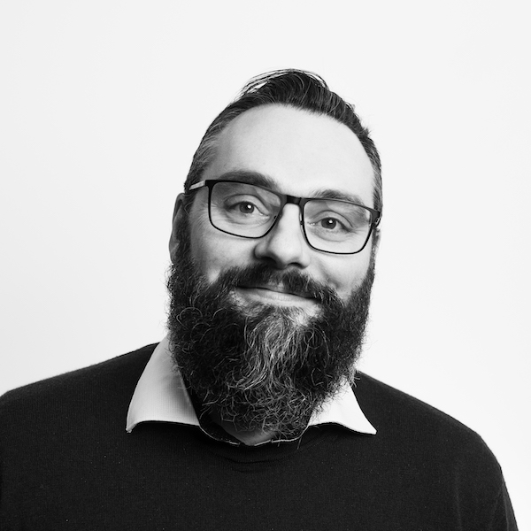

Sehr geehrte Damen und Herren,
die Ausschreibung der MD-IT GmbH hat mich sofort angesprochen — nicht wegen der Position, sondern wegen der Mission: eine Engineering-Organisation zu gestalten, die wirklich etwas bewegt. Genau das ist es, was mich antreibt.
Als Engineering Director bei sevDesk habe ich zwei R&D-Säulen mit 6 Engineering Managern und über 40 Entwicklern verantwortet. Dabei habe ich gelernt, dass operative Schlagkraft nur entsteht, wenn drei Dinge zusammenkommen: eine Führungskultur psychologischer Sicherheit mit direktem Feedback, in der Eigenverantwortung wirklich gelebt wird; eine konsequente Wertstrom-Optimierung, messbar über DORA-Metriken; und der gezielte Einsatz von KI — von AI-Assisted Coding bis zu LLM-Workflows — zur nachweislichen Steigerung der Developer Velocity. Diese drei Schwerpunkte sind kein Zufall: Sie entsprechen exakt dem, was MD-IT sucht.
Was mich besonders für diese Aufgabe qualifiziert, ist die direkte Passung auf ein zentrales Thema Ihrer Ausschreibung: Bei Würth Cloud Services habe ich individuell gewachsene Systemkomponenten in eine mandantenfähige Plattformarchitektur transformiert — mit heterogener Nutzerbasis, Konzern-Governance und Startup-Tempo gleichzeitig. Mein technisches Fundament in Java/Spring Boot, Kubernetes und CI/CD erlaubt mir dabei, diese Transformation nicht nur zu steuern, sondern technisch zu gestalten und als glaubwürdiger Gesprächspartner auf allen Ebenen — von Entwicklern bis zur Geschäftsführung — zu agieren.
Die Gestaltungsfreiheit, Engineering-Kultur und KI-Strategie bei MD-IT maßgeblich zu prägen, ist für mich kein Bonus — es ist der Kern dieser Aufgabe. Und der gesellschaftliche Impact, den die Medizinischen Dienste täglich leisten, gibt dieser Arbeit eine Bedeutung, die weit über das Technische hinausgeht.
Mein Gehaltswunsch beträgt 140.000 Euro brutto jährlich. Meinen frühestmöglichen Eintrittstermin sehe ich zum 01.07.2026, idealerweise nach Vereinbarung.
Über ein erstes Gespräch freue ich mich sehr.
Promovierter Informatiker (Dr. rer. nat., summa cum laude) und erfahrene Engineering-Führungspersönlichkeit mit über 15 Jahren progressiver Leitungsverantwortung in technologiegetriebenen Unternehmen unterschiedlicher Reifestufen. Meine Stärke liegt darin, Engineering-Organisationen auf das nächste Level zu bringen: durch konsequente Wertstrom-Optimierung von der Idee bis zur Produktion, den gezielten Einsatz KI-gestützter Entwicklungswerkzeuge zur nachweislichen Steigerung der Developer Velocity und eine Führungskultur, in der psychologische Sicherheit und direktes Feedback Eigenverantwortung und kontinuierliche Verbesserung ermöglichen. Ich gestalte Team-Strukturen, die Abhängigkeiten minimieren und kognitive Last reduzieren, und kommuniziere souverän auf C-Level sowie gegenüber Produktmanagement und Fachbereichen.
Disziplinarische Führung bis 50+ Personen · Engineering Manager Coaching · Psychologische Sicherheit & Feedback-Kultur · Eigenverantwortung & Continuous Improvement · Karriere-Framework & Performance-Management · Recruiting & Retention
AI-Assisted Coding · LLM-Workflow-Integration · Automatisierte Dokumentation · Developer Experience (DevEx) · DORA-Metriken & Performance-Indikatoren · Wertstrom-Optimierung · Kognitive Last & Team-Autonomie
Agile Governance & Value Streams · Organizational Design · Minimierung von Abhängigkeiten · Klare Verantwortlichkeiten entlang Service-Architektur · OKR-Framework · Schnittstellenmanagement
Java / Spring Boot · Kubernetes / Docker · AWS · Red Hat OpenShift · React · CI/CD · DevOps · Mandantenfähige Systemarchitektur · API-first · Microservices · Technical Roadmap
Budget- & Investitionsplanung (€1–5M) · Portfolio- & Projektpriorisierung · Make-or-Buy-Entscheidungen · Provider- & Vertragsmanagement · Compliance-konforme Infrastruktur (DSGVO) · Audit-Readiness
C-Level- & Geschäftsführungs-Reporting · Produktmanagement-Schnittstelle · Customer Care Alignment · Cross-funktionale Teamsteuerung · Konzernsteuerung & Konzernabstimmung · Externe Partnersteuerung
Als Head of Consulting verantwortet Dr. Griebe die strategische Beratung von Enterprise-Projektpartnern zu Themen der digitalen Plattformentwicklung, KI-gestützter Engineering-Prozesse und moderner Engineering-Organisationen. Ein zentrales Mandat ist die Beratung der 50Hertz Transmission GmbH / Elia Group, einem der führenden europäischen Übertragungsnetzbetreiber, beim Aufbau einer skalierbaren digitalen Developer-Plattform. Verantwortung umfasst Konzeption der Plattformstrategie, Steuerung der Delivery und Kommunikation auf Führungsebene beim Kunden.
Schwerpunkte der Beratungsmandate liegen auf Cloud-nativen Developer-Plattformen, der Integration KI-gestützter Entwicklungsworkflows (AI-Assisted Coding, LLM-basierte Automatisierung) in den Software-Lifecycle sowie auf Developer-Experience-Strategien zur nachweislichen Steigerung der Produktivität. Begleitung von Teams beim Aufbau skalierbarer Delivery-Strukturen und Wertstrom-orientierter Organisationsmodelle für komplexe Unternehmensumgebungen.
Als Engineering Director verantwortet Dr. Griebe zwei der drei Säulen der sevDesk-R&D-Organisation: Platform Engineering und Growth & Retention. Er steuert Roadmap, technische Vision und Architekturstrategie über beide Verantwortungsbereiche hinweg und verantwortet das Headcount- sowie Einstellungsbudget in enger Abstimmung mit der Geschäftsführung. Ein zentrales Ergebnis seiner Amtszeit ist die Initiierung und Steuerung eines unternehmensweiten Applikationsmodernisierungsprogramms, das die gewachsene Produktlandschaft auf eine Cloud-native, containerisierte Zielarchitektur (Kubernetes/Docker auf AWS) überführt. DORA-Metriken (Deployment Frequency, Lead Time, Change Failure Rate, MTTR) wurden als Grundlage der Lieferfähigkeitsmessung etabliert; daraus abgeleitete Engpass-Analysen steuern die kontinuierliche Optimierung des Wertstroms. Die technische Roadmap wird im OKR-Framework mit der Geschäftsführung abgestimmt und in messbaren Quarterly Goals operationalisiert.
Dr. Griebe führt disziplinarisch 6 Engineering Manager und ist damit indirekt für über 40 Softwareentwickler verantwortlich. Zentrales Führungsprinzip ist die Etablierung einer Kultur psychologischer Sicherheit und direkten Feedbacks, in der Eigenverantwortung und kontinuierliche Verbesserung gelebt werden. Er hat ein unternehmensweites Karriere-Framework und Performance-Management-System etabliert, das strukturierte Entwicklungspfade, transparente Bewertungskriterien und eine leistungsorientierte Feedbackkultur schafft. Ein zentraler Organisationsentwicklungsschwerpunkt lag in der strategischen Ausgestaltung des Platform-Engineering-Pillars als eigenständige Einheit sowie in der vollständigen Steuerung des Einstellungsprozesses für eine dedizierte Engineering-Director-Position. Recruiting und Retention von Top-Talenten sind integraler Bestandteil seiner strategischen Führungsagenda.
Unter Dr. Griebes Leitung wurde die Integration KI-gestützter Entwicklungstools in den Software-Lifecycle systematisch vorangetrieben: AI-Assisted Coding (GitHub Copilot) und automatisierte Code-Review-Unterstützung wurden eingeführt, um den individuellen Flow der Entwickler nachweislich zu steigern und administrative Hürden zu eliminieren. Die Produktivitätssteigerung wurde über DORA-Metriken und Developer-Experience-Surveys quantifiziert.
Der Produktstack umfasst Spring Boot/Kotlin, PHP und React; die Plattforminfrastruktur basiert auf Docker und Kubernetes in AWS. Unter Dr. Griebes Leitung wurde ein strategisches Shift-and-Lift-Programm der gesamten Entwicklungsinfrastruktur von GitLab nach GitHub durchgeführt. Das Programm umfasste die vollständige Transformation der CI/CD-Pipelines und Automatisierungslandschaft unter einem konsequenten DevSecOps-Ansatz: Security-Scanning, Dependency-Auditing und Compliance-Checks sind seither als integraler Bestandteil jeder Delivery-Pipeline verankert. Dr. Griebe etabliert darüber hinaus architekturelle Standards und API-first-Prinzipien sowie Architecture Decision Records (ADRs) als Governance-Instrument.
Bei Würth Cloud Services verantwortete Dr. Griebe sowohl die Modernisierung bestehender Legacysysteme als auch den parallelen Aufbau neuer Plattformkomponenten. Ein zentrales Ergebnis war die Transformation individueller, monolithisch gewachsener Systemkomponenten hin zu einer skalierbaren, mandantenfähigen Plattformarchitektur — eine Systemlandschaft, die mobile und stationäre Applikationen für eine heterogene Nutzerbasis aus kleinen und mittelständischen Handwerksbetrieben konsistent bedient. Die Definition der Zielarchitektur, die Priorisierung des Modernisierungsportfolios nach Business Value sowie die Steuerung von Betrieb und Weiterentwicklung lagen in seiner alleinigen Verantwortung. Dazu gehörte auch die Headcount- und Investitionsbudgetsteuerung in enger Abstimmung mit der Würth IT und dem Konzernvorstand.
Dr. Griebe baute das Engineering-Team von Grund auf auf und steuerte Frontend-, Backend- und Mobile-Engineers im vollständigen Mitarbeiterlebenszyklus. Im konzerngestützten Startup-Kontext etablierte er eine Führungskultur, die technische Exzellenz mit Eigenverantwortung verbindet; klare Verantwortlichkeiten entlang der Service-Architektur minimierten Abhängigkeiten und reduzierten die kognitive Belastung der Teams. Die disziplinarische und fachliche Führung erstreckte sich über cross-funktionale Teams und erforderte ein hohes Maß an Kommunikation sowohl in die Konzernstrukturen der Würth Gruppe als auch gegenüber externen Entwicklungspartnern.
Die Plattformarchitektur basierte auf Red Hat OpenShift im Würth-Konzernrechenzentrum, ergänzt durch Docker und Kubernetes für Container-Orchestrierung; der Produktstack umfasste PHP, TypeScript/JavaScript, Node.js, Java, Spring Boot, React und Flutter. Architekturentscheidungen wurden im Einklang mit den IT-Governance- und Sicherheitsstandards des Würth-Konzerns getroffen und dokumentiert. Betrieb, Monitoring und Incident-Management lagen in der Verantwortung des Teams; die Integration in die Würth-IT-Infrastruktur erforderte strukturierte Change-Management-Prozesse und regelmäßiges Reporting auf Konzernebene.
Als Leiter des Competence Centers Digitalisierungsberatung verantwortete Dr. Griebe den strategischen Aufbau und die eigenständige Steuerung eines profitablen Beratungsbereichs bei einem der führenden deutschen IT-Dienstleister. Er akquirierte und lieferte IT-Transformationsprojekte bei Enterprise-Kunden mit einem Projektvolumen von 1–5 Mio. EUR, von der initialen Bedarfsanalyse und Fit/Gap-Analyse über Make-or-Buy-Entscheidungen bis zur Delivery komplexer Cloud-nativer Architekturen. Der Bereich wurde als eigenständige Profit-Center-Einheit mit nachweislichem Wachstum im Neukundengeschäft etabliert. Ein Schwerpunkt lag auf Wertstrom-orientiertem Vorgehen: Die Optimierung des End-to-End-Delivery-Prozesses — von der Idee bis zur Produktion — war zentrales Qualitätsmerkmal der gelieferten IT-Transformationen.
Dr. Griebe baute ein interdisziplinäres Berater- und Entwicklerteam von bis zu 10–20 Personen auf und übernahm die disziplinarische sowie fachliche Führungsverantwortung im vollständigen Mitarbeiterlebenszyklus. Er entwickelte strukturierte Kompetenzpfade für Consultants und Engineers, führte regelmäßige Leistungs- und Potenzialreviews durch und etablierte einen systematischen Wissenstransfer innerhalb des Teams. Den Einstieg in die Führungsrolle vollzog er als Teamleiter (ab 06/2016) und übernahm innerhalb von eineinhalb Jahren die Gesamtleitung des Competence Centers (11/2017). Coaching und Mentoring von Mitarbeitenden im Projektalltag sowie die Förderung von Loyalität und Teamzusammenhalt waren zentrale Führungsprinzipien.
Die Beratungsprojekte deckten Cloud-native Architekturen mit Microservices, Java Spring Boot, Docker und Kubernetes ab; hinzu kamen die Konzeption und Entwicklung mobiler Anwendungen sowie die Einführung agiler Governance-Modelle (Scrum, Kanban) bei Enterprise-Kunden. Requirements Engineering (User Stories, Fit/Gap-Analysen), Solution Design und Architektur-Reviews auf Kundenseite waren integraler Bestandteil der Projektrollen. Projektsteuerung und Dokumentation erfolgten mit Jira, Confluence und MS-TFS; Build- und Source-Code-Management mit Git und Jenkins/TeamCity.
Produktmanagement einer großen IT-Anwendungslandschaft im Bereich Retail, Logistik und Lagerwirtschaft in einem Hyper-Growth-Umfeld. Entwurf einer skalierenden Systemlandschaft mit mobilen und stationären Komponenten in einer Microsoft-basierten Cloud-Umgebung (Docker, Kubernetes); Design und Implementierung einer mobilen B2B/B2E-Softwarelösung für über 3.500 Lager- und Logistikmitarbeiter. Stakeholder-Management auf C-Level, agiles Requirements Engineering und Wertstrom-Management als Schnittstelle zwischen Business und Engineering.
Disziplinarische und fachliche Führung cross-funktionaler Software-Teams im gesamten Mitarbeiterlebenszyklus: Recruiting, Qualifikation, Laufbahnentwicklung und Retention in einem Hyper-Growth-Kontext. Aufbau von Strukturen und Handlungsfeldern im Bereich Produktmanagement als eigenständige Funktion; Entwicklung von Mitarbeitenden und Evaluation von Leistung und Potenzial.
| 01/2014 – 04/2016 | Leiter Arbeitsgruppe Mobile Anwendungen & Prozesse | paluno / Universität Duisburg-Essen |
| 07/2010 – 01/2014 | Wissenschaftlicher Mitarbeiter, Software Engineering | paluno / Universität Duisburg-Essen |
| 07/2009 – 06/2010 | Wissenschaftlicher Mitarbeiter, Angewandte Telematik/e-Business | Universität Leipzig |
„Methode und Technologie zur modellbasierten Automatisierung von Tests kontextsensitiver mobiler Anwendungen"
Universität Duisburg-Essen · Betreuer: Prof. Dr. Klaus Pohl, paluno – The Ruhr Institute for Software Technology
Universität Leipzig · Diplomarbeit: „Generierung von Testplänen aus UML-Aktivitätsdiagrammen unter Anwendung von Modelltransformation" · Nebenfach Philosophie
Während der akademischen Laufbahn (2009–2016) entstanden mehrere peer-reviewed Publikationen im Bereich mobile Software Engineering, modellbasiertes Testen und kontextsensitive Anwendungsarchitekturen. Die Forschung wurde durch Industrieprojekte mit Drittmitteln gestützt und in enger Zusammenarbeit mit Unternehmenspartnern durchgeführt.
Thematische Schwerpunkte: Model-Based Testing · UML · Mobile Architectures · Quality Assurance · Context-Aware Systems